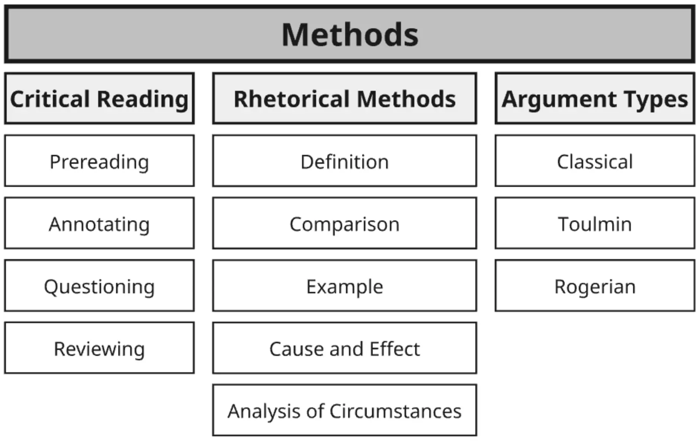
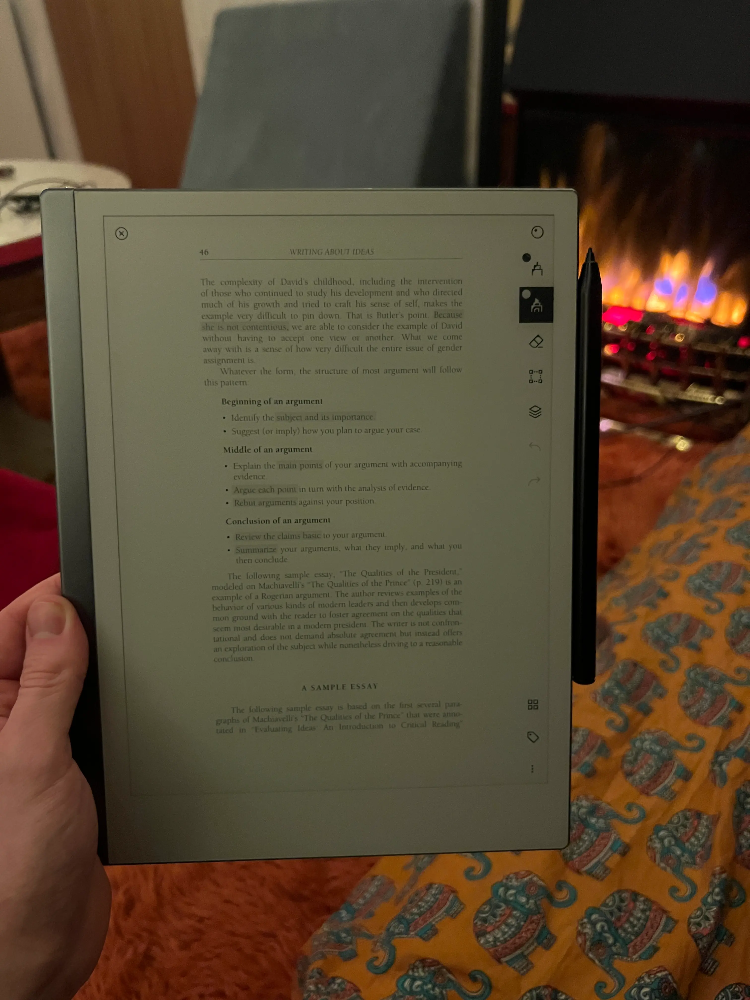
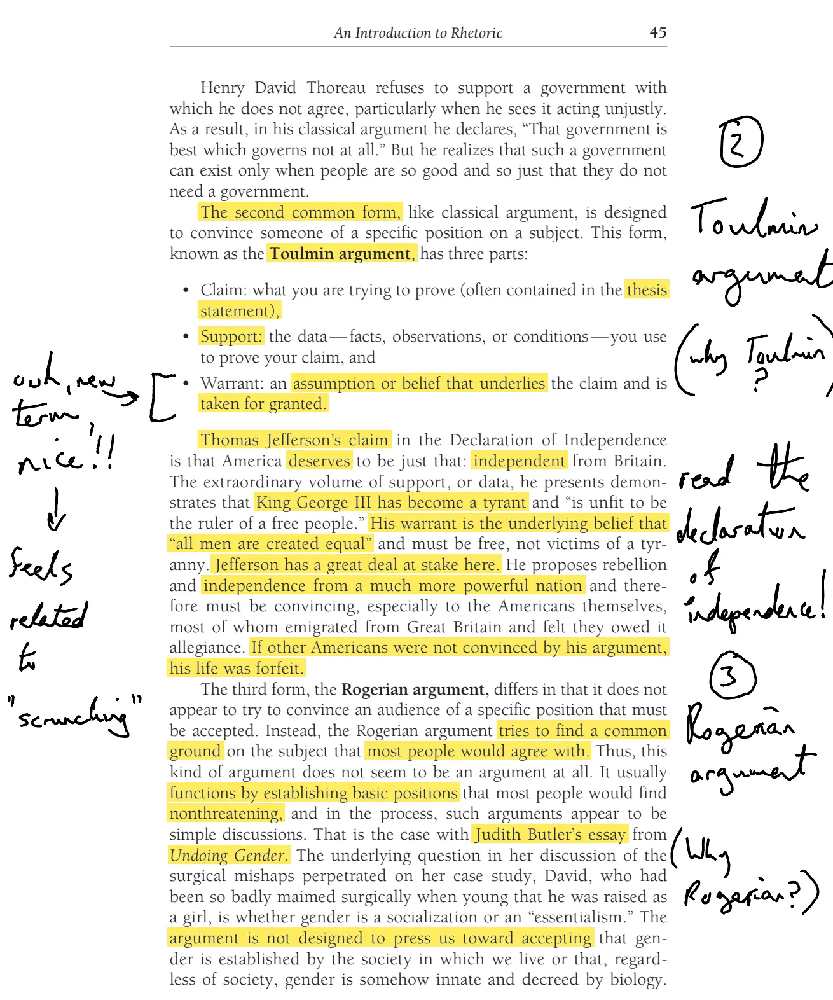

- Log per day - 2026
- From “A World of Ideas” by Lee Jacobus

- The “critical reading” section of Jacobus outlines:
- Prereading
- Annotating
- Questioning
- Reviewing
- And the exciting part of this is that I’ve been doing this shit
- I pre-read, I write questions, I’m always scribbling in the margins of my reMarkable (one of my best purchases ever actually, shoutout)

- I love you reMarkable 2
Exploring the 4 moves
1. What is pre-reading?
- I actually don’t fully remember what was said here, I’ll make some flashcards/notes
- I guess there’s the thing of, skim the text, get an overview (they talk about this in the “How To Read a Book” book too)
- And there’s also the thing of, knowing the context of the author, what time period they were writing in, who they were replying to, etc. Key influences etc. E.g., Jung from Freud, Heidegger from Husserl, etc.
- A modern way to preread IMO is to use Gemini Deep Research to get an overview report on an author, a topic etc
- From NotebookLM:
Prereading is the initial stage of the critical reading process, defined as developing a sense of what a piece is about and identifying its general purposes. In the context of the sources, this process is designed to make the task of reading “more delightful, more useful, and much easier” by providing a framework for understanding complex ideas before diving into the full text
(And guidance given for how to do this, but Jacobus book-specific as it has prereading questions etc:)
- Reading Part Introductions: Before starting a specific selection, readers are encouraged to read the introduction to the “part” (e.g., Democracy or Ethics) to understand the broader issues and questions central to all essays in that section.
- Reviewing Headnotes: Each selection is preceded by a detailed headnote that supplies historical background on the author, sets the intellectual stage, and identifies the writer’s main points and rhetorical methods.
- Scanning the Text: Quickly scanning a selection for subheadings can provide a “map or guide” to the essay’s structure and meaning.
- Engaging with Prereading Questions: The book provides brief questions before every selection to help readers focus on central issues and overcome minor difficulties in understanding the author’s meaning during their first reading
2. Annotating
- His point was basically just “annotating makes it easier to re-read and know what to engage with”, which, yeah, been doing that for years! Highlighting, but also scribbling in the margins
- E.g. 👇

Notes from NotebookLM
Annotating is defined in the sources as an active, critical reading process where you use a pen or pencil to mark passages that are significant enough to return to later. Rather than being a passive recipient of information, an annotating reader engages in a “meaningful dialogue” with the author
According to the sources, the practice serves several key functions and involves specific techniques:
The Purpose of Annotation
- Facilitating Review: The overriding goal is to make it possible to review a piece and understand its key points without having to reread the entire text. It helps “conquer the invisible” by making previously clear arguments easy to find again.
- Supporting Writing: These notes serve as a foundation for effective writing. By marking sentences you might want to quote or noting your responses in the margins, you create a map for your own future essays.
- Mastering Material: For challenging works—such as those by Freud or Machiavelli—annotating helps you keep track of complex ideas and master difficult content.
How to Annotate Effectively
The sources suggest that reading with a pen or pencil should become “second nature” and offer the following specific strategies:
- Underline or highlight: Focus on key sentences, such as definitions and statements of purpose, as well as recurring key words.
- Use the margins: Note the topic of paragraphs, record your agreement or disagreement with the author, and make notes to yourself to develop certain ideas later.
- Ask questions: Use the margins to raise issues you feel the author treated well or poorly.
- Identify quotes: Specifically mark passages that you may want to use as evidence in your own writing.
The Ninth Edition of the text includes a modeled example of this process, featuring an annotated portion of Niccolò Machiavelli’s “The Qualities of the Prince” to help students understand how to apply these techniques to their own reading
3. Questioning
- This was a key thing that I got from Defender of Basic & ORI. Create hypotheses, create a model, investigate, etc.
- E.g., all the way back on June 15th 2025, when I started this website to do the ORI thing, e.g. Israel & Iran (session 2)
- It’s also just like, pretty obvious dude. Although I probably didn’t do it for my first n years of trying to educate myself, instead taking whatever was said as High Wisdom To Be Ingested (honestly I’ve been doing this to some degree this whole time)
Notes from NotebookLM
In the context of critical reading, questioning is the process of raising issues that you feel need to be taken into consideration, whether you believe an author has treated those issues well or poorly. It is a key component of active reading, which requires moving beyond passive reception to hold an “inner dialogue” with the author.
The sources describe several ways questioning is integrated into the “world of ideas”:
A Tool for Critical Reading
Questioning is often an extension of the annotation process. As you read, you are encouraged to write questions in the margins to track your responses and identify points of disagreement. This active engagement helps you move from simply identifying an author’s claims to evaluating the soundness of their thinking.
Guided Prereading Questions
To assist with challenging texts, the book provides two or three prereading questions before every selection. These are designed to:
- Help you focus on central issues during your first reading.
- Overcome minor difficulties in understanding the author’s complex meaning.
- Provide a “map” for the most important aspects of the passage.
A Strategy for Writing
Questioning is also presented as one of the most reliable ways to generate topics for writing. Many influential thinkers, such as James Madison, Adam Smith, and Charles Darwin, structured their landmark works by starting with a central question and then answering it. You can apply this by:
- Turning your margin annotations into formal questions for an essay (e.g., “Should a leader be armed?”).
- Asking “useful questions” of any text, such as: “What is the author’s purpose?”, “What claim is being made?”, and “Does the author omit contradictory evidence?“.
Ultimately, the sources suggest that once you begin a line of questioning, your thinking expands, allowing you to develop original ideas that serve as a foundation for your own academic writing.
4. Reviewing
- From memory, this is as simple as “you don’t just read stuff one, you read multiple times, and you can use your annotations and questions to navigate more efficiently and engage more deeply”
- I first got this idea from the iconic Augmenting Long-term Memory from Michael Nielsen, the idea of re-reading at progressive depths
Notes from NotebookLM
Reviewing is the critical reading stage that follows a close, active reading of a text. It involves rereading your annotations and underlinings to grasp the “entire picture” of the work.
This reminds me of the “Hermeneutic Circle” that I got from Heidegger. Hermeneutic circle, hermeneutic spiral, throwback
According to the sources, the reviewing process consists of several key elements:
The Core Purpose
The primary goal of reviewing is to account for the major ideas uncovered during your initial reading. While an initial reading focuses on the details, reviewing allows you to step back and see how those details form a cohesive argument or “raw form”.
I’ve been doing this for ages, super obvious innit
Effective Techniques
- Utilizing Annotations: The effectiveness of a review depends heavily on how well you annotated the text. High-quality annotations act as a map, allowing you to identify key points without rereading the entire essay.
- Summarizing: The sources suggest that writing a summary during the review process can make the author’s meaning even clearer.
- Identifying Themes: Reviewing helps you notice recurring themes. For example, a review of annotations on Machiavelli reveals constant themes like the necessity of a leader being a military person.
Connection to Writing
Reviewing is a vital bridge between reading and writing. When preparing an essay, you are encouraged to reread while paying close attention to your marginal notes. This helps you find evidence for your own arguments and ensures you have reflected on and reconsidered the author’s significant ideas.
Ultimately, reviewing is the step that allows you to move from understanding what an author said to forming your own ideas and evaluating the soundness of the author’s thinking